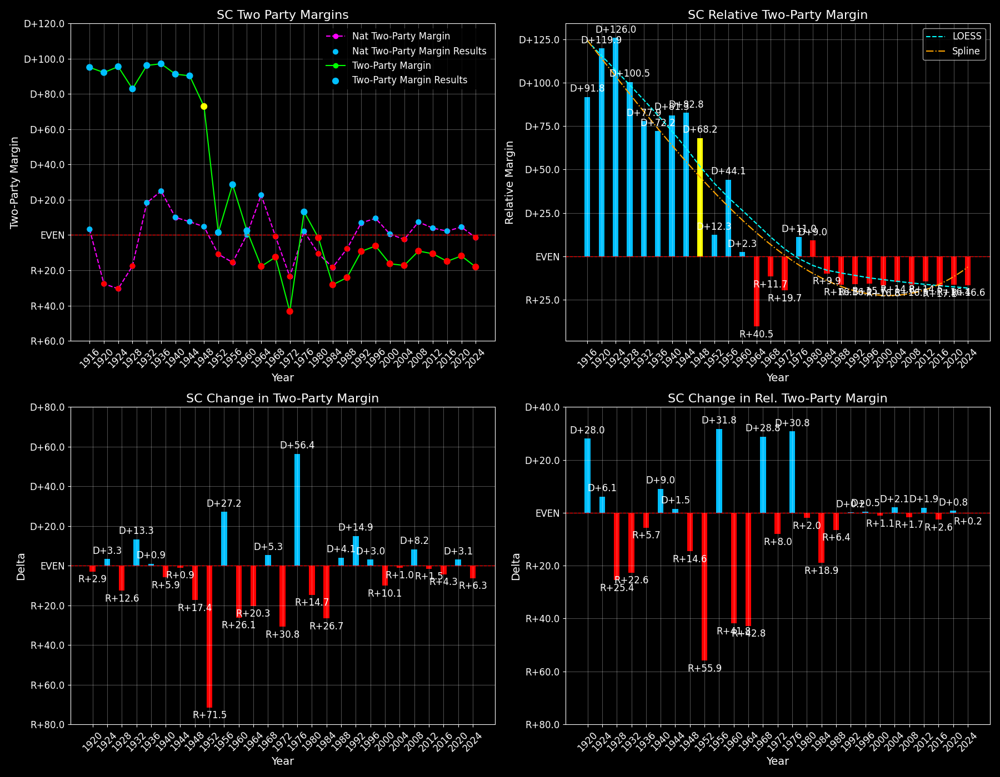

South Carolina (SC) — Statewide

Margins · 3rd-Party share · Pres. deltas

Relative margins · Relative 3rd-Party · Rel. deltas
South Carolina (SC) — Total Data
| Year | EVs | D | R | State Margin | Nat. Margin | Rel. Margin | Total votes |
|---|---|---|---|---|---|---|---|
| 1968 | 8 | 197,486(29.6%) | 254,062(38.1%) | R+8.5 | R+0.6 | R+7.9 | 666,978 |
| 1972 | 8 | 184,559(27.9%) | 477,044(72.1%) | R+44.2(Δ R+35.7) | R+23.5(Δ R+23.0) | R+20.7(Δ R+12.8) | 661,603 |
| 1976 | 8 | 450,807(56.6%) | 346,149(43.4%) | D+13.1(Δ D+57.3) | D+2.2(Δ D+25.7) | D+10.9(Δ D+31.6) | 796,956 |
| 1980 | 8 | 427,559(48.0%) | 441,206(49.6%) | R+1.5(Δ R+14.7) | R+9.9(Δ R+12.1) | D+8.4(Δ R+2.6) | 890,105 |
| 1984 | 8 | 344,459(35.9%) | 615,539(64.1%) | R+28.2(Δ R+26.7) | R+18.1(Δ R+8.2) | R+10.1(Δ R+18.5) | 959,998 |
| 1988 | 8 | 370,554(37.9%) | 606,443(62.1%) | R+24.1(Δ D+4.1) | R+7.7(Δ D+10.4) | R+16.4(Δ R+6.3) | 976,997 |
| 1992 | 8 | 479,514(40.1%) | 577,508(48.3%) | R+8.2(Δ D+15.9) | D+5.6(Δ D+13.3) | R+13.8(Δ D+2.6) | 1,195,804 |
| 1996 | 8 | 506,283(44.3%) | 573,458(50.1%) | R+5.9(Δ D+2.3) | D+8.6(Δ D+3.0) | R+14.4(Δ R+0.6) | 1,144,127 |
| 2000 | 8 | 566,033(40.9%) | 786,881(56.9%) | R+16.0(Δ R+10.1) | D+0.5(Δ R+8.0) | R+16.5(Δ R+2.0) | 1,384,025 |
| 2004 | 8 | 661,661(40.9%) | 937,963(58.0%) | R+17.1(Δ R+1.1) | R+2.5(Δ R+3.0) | R+14.6(Δ D+1.8) | 1,616,800 |
| 2008 | 8 | 862,449(44.9%) | 1,034,896(53.9%) | R+9.0(Δ D+8.1) | D+7.3(Δ D+9.7) | R+16.2(Δ R+1.6) | 1,920,731 |
| 2012 | 9 | 865,940(44.1%) | 1,071,646(54.6%) | R+10.5(Δ R+1.5) | D+3.9(Δ R+3.4) | R+14.3(Δ D+1.9) | 1,964,119 |
| 2016 | 9 | 855,373(40.7%) | 1,155,389(54.9%) | R+14.3(Δ R+3.8) | D+2.1(Δ R+1.8) | R+16.4(Δ R+2.0) | 2,103,026 |
| 2020 | 9 | 1,091,541(43.4%) | 1,385,103(55.1%) | R+11.7(Δ D+2.6) | D+4.4(Δ D+2.3) | R+16.1(Δ D+0.2) | 2,513,329 |
| 2024 | 9 | 1,028,452(40.4%) | 1,483,747(58.2%) | R+17.9(Δ R+6.2) | R+1.5(Δ R+6.0) | R+16.3(Δ R+0.2) | 2,548,140 |
Column explanations
- Δ
- Change (delta) in the value from the previous election year.
- Year
- Election year.
- EVs
- Number of electoral votes allocated to this state or unit.
- D
- Number of votes for the Democratic candidate (raw count(pct%)).
- R
- Number of votes for the Republican candidate (raw count(pct%)).
- State Margin
- Margin between the two major-party candidates, including third-party votes ((D - R)/total).
- Nat. Margin
- The national presidential margin for that year, including third-party votes ((D_total - R_total)/total_votes).
- Rel. Margin
- The presidential margin relative to the national presidential margin (Margin - Nat. Margin).
- Total votes
- Total voter turnout or ballots cast (when provided).
South Carolina (SC) — Third-Party Data
| Year | Other votes | State 3rd-Party Share | 3rd-Party Nat. Share | 3rd-Party Rel. Share |
|---|---|---|---|---|
| 1968 | 215,430(32.3%) | 32.30% | 13.59% | 18.71% |
| 1972 | 0(0.0%) | 0.00% | 0.09% | -0.09% |
| 1976 | 0(0.0%) | 0.00% | 0.33% | -0.33% |
| 1980 | 21,340(2.4%) | 2.40% | 6.98% | -4.58% |
| 1984 | 0(0.0%) | 0.00% | 0.12% | -0.12% |
| 1988 | 0(0.0%) | 0.00% | 0.21% | -0.21% |
| 1992 | 138,782(11.6%) | 11.61% | 19.23% | -7.63% |
| 1996 | 64,386(5.6%) | 5.63% | 9.68% | -4.05% |
| 2000 | 31,111(2.2%) | 2.25% | 3.65% | -1.40% |
| 2004 | 17,176(1.1%) | 1.06% | 0.84% | 0.23% |
| 2008 | 23,386(1.2%) | 1.22% | 1.38% | -0.16% |
| 2012 | 26,533(1.4%) | 1.35% | 1.62% | -0.27% |
| 2016 | 92,264(4.4%) | 4.39% | 5.54% | -1.15% |
| 2020 | 36,685(1.5%) | 1.46% | 1.84% | -0.38% |
| 2024 | 35,941(1.4%) | 1.41% | 1.88% | -0.47% |
Column explanations
- Year
- Election year.
- Other votes
- Number of votes for third-party (other) candidates (raw count(pct%)).
- State 3rd-Party Share
- Share of the vote received by third-party (other) candidates.
- 3rd-Party Nat. Share
- The national third-party share for that year (3rd-Party votes / total votes).
- 3rd-Party Rel. Share
- Third-party share relative to the national third-party share (3rd-Party share - Nat. 3rd-Party share).

Two-party margins · relative · deltas
South Carolina (SC) — Two-Party Data
| Year | 2-Party Margin | 2-Party Nat. Margin | 2-Party Rel. Margin |
|---|---|---|---|
| 1968 | R+12.5 | R+0.7 | R+11.9 |
| 1972 | R+44.2(Δ R+31.7) | R+23.6(Δ R+22.9) | R+20.7(Δ R+8.8) |
| 1976 | D+13.1(Δ D+57.3) | D+2.2(Δ D+25.8) | D+10.9(Δ D+31.6) |
| 1980 | R+1.6(Δ R+14.7) | R+10.6(Δ R+12.8) | D+9.1(Δ R+1.9) |
| 1984 | R+28.2(Δ R+26.7) | R+18.1(Δ R+7.5) | R+10.1(Δ R+19.2) |
| 1988 | R+24.1(Δ D+4.1) | R+7.8(Δ D+10.4) | R+16.4(Δ R+6.3) |
| 1992 | R+9.3(Δ D+14.9) | D+6.9(Δ D+14.7) | R+16.2(Δ D+0.2) |
| 1996 | R+6.2(Δ D+3.0) | D+9.5(Δ D+2.6) | R+15.7(Δ D+0.5) |
| 2000 | R+16.3(Δ R+10.1) | D+0.5(Δ R+8.9) | R+16.9(Δ R+1.2) |
| 2004 | R+17.3(Δ R+0.9) | R+2.5(Δ R+3.0) | R+14.8(Δ D+2.1) |
| 2008 | R+9.1(Δ D+8.2) | D+7.4(Δ D+9.8) | R+16.5(Δ R+1.7) |
| 2012 | R+10.6(Δ R+1.5) | D+3.9(Δ R+3.4) | R+14.5(Δ D+1.9) |
| 2016 | R+14.9(Δ R+4.3) | D+2.2(Δ R+1.7) | R+17.1(Δ R+2.6) |
| 2020 | R+11.9(Δ D+3.1) | D+4.5(Δ D+2.3) | R+16.4(Δ D+0.8) |
| 2024 | R+18.1(Δ R+6.3) | R+1.6(Δ R+6.1) | R+16.6(Δ R+0.2) |
Column explanations
- Δ
- Change (delta) in the value from the previous election year.
- Year
- Election year.
- 2-Party Margin
- Margin between the two major-party candidates, ignoring third-party votes ((D - R)/(D + R)).
- 2-Party Nat. Margin
- The national presidential margin for that year, including third-party votes ((D_total - R_total)/total_votes).
- 2-Party Rel. Margin
- The presidential margin relative to the national presidential margin (Margin - Nat. Margin).